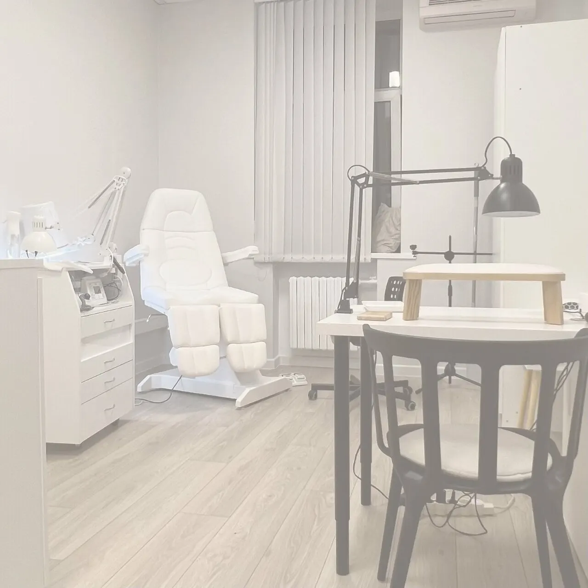
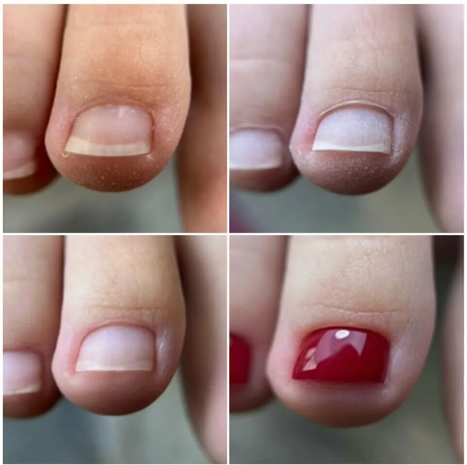
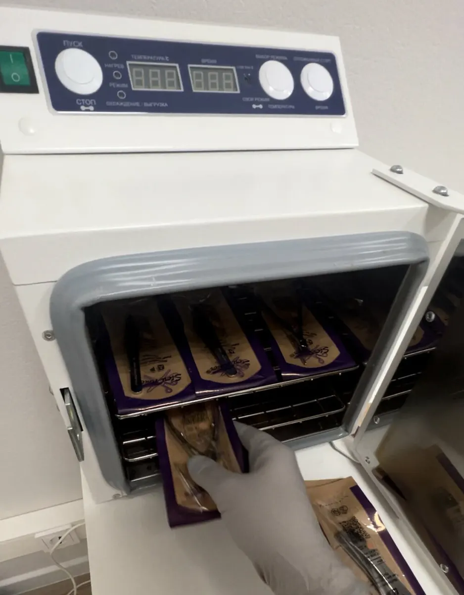
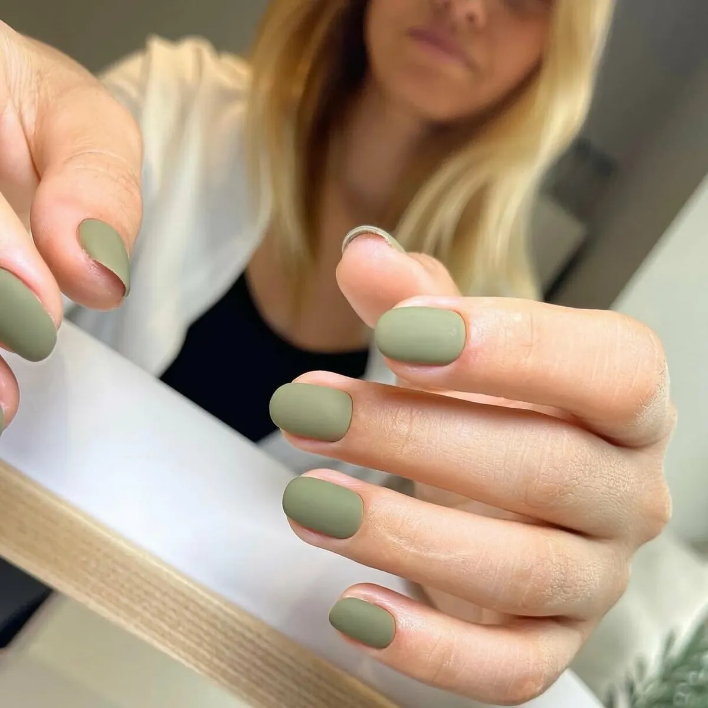

Подология · педикюр · маникюр
Подолог и педикюр у Владыкино: здоровые стопы и ногти
Подологическая обработка, титановая нить, гигиенический педикюр и маникюр у мастера-подолога. В кабинете свой сухожаровой шкаф для инструментов.
- Рейтинг 5,0 на Яндекс.Картах
- Ежедневно 09:00–22:00
- Вход доступен на коляске, есть парковка

Цены – до записи, а не на кассе
Прайс с карточки кабинета на Яндекс.Картах. Он давно не обновлялся – цену подтвердим при записи.
Подология
- Консультация подолога1 500 ₽
- Комплексная обработка, 1 категория4 000 ₽
- Комплексная обработка, 2 категория5 000 ₽
- Комплексная обработка, 3 категория6 000 ₽
- Титановая нить4 000 ₽
Педикюр и маникюр
- Педикюр гигиенический3 500 ₽
- Педикюр с гель-лаком4 000 ₽
- Педикюр с обычным лаком4 000 ₽
- Маникюр гигиенический2 500 ₽
- Маникюр с гель-лаком3 300 ₽
- Снятие покрытия500 ₽
Категорию подологической обработки мастер определит на консультации.
Как записаться
- 01
Выбираете услугу и время
В форме наверху страницы. Если ходите к своему мастеру – допишите его имя.
- 02
Отправляете в WhatsApp
Текст сообщения уже собран, остаётся нажать «Отправить».
- 03
Подтверждаем время
Отвечаем со свободным окном мастера.
- 04
Приходите на Гостиничную, 3
Рядом парковка, вход доступен на коляске.



Почему к нам приходят
Мастер – подолог
В отзывах: «специалист не просто мастер, но ещё и подолог».
Помогают после неудачного педикюра
Клиентка пришла с воспалением после смарт-педикюра – мастер объяснила этапы и вылечила.
Осматривают стопы
Мастер «тщательно осматривает стопы и ногти» и подсказывает, если есть проблема.
Аккуратно, без порезов
Кутикула обработана без порезов – так пишут о маникюре.
Отзывы с Яндекс.Карт
«Ходила на педикюр, пошла так как специалист не просто мастер, но еще и подолог. Очень понравился результат: красиво, аккуратно, быстро. Чистая свежая студия, Анна ответила на все вопросы, получилось все хорошо, рекомендую!»
Дарьяна Б. · 15 июня 2026
«Искала мастера недалеко от дома и нашла. Анна работает профессионально, да не быстро, но все супер идеально. Руки всегда аккуратные, кутикула обработана — без порезов и заусенцев. К стерилизации инструментов нет вопросов, что для меня главный показатель профессионализма. Особенно хочу отметить покрытие: при моей активной жизни (спорт, дом, работа) маникюр держится ровно 3-4 недели, советует по форме и цвету, но не навязывает своё мнение. Очень довольна, рекомендую!»»
Ирина Чудинова · 5 августа 2026
«Делаю гигиенический педикюр у Анны! Прекрасный, аккуратный и внимательный мастер, всегда тщательно осматривает стопы и ногти. Указывает, если есть проблемы и предлагает решение. Кабинет очень чистый, комфортный. Удобное расположение - близко от метро Окружная. Очень довольна работой, всем рекомендую!»
fm777 ru · 20 октября 2025
Отзывы с карточки на Яндекс.Картах, без правок.
Частые вопросы
Как вас найти?
Москва, Гостиничная улица, 3. Рядом парковка, вход доступен на коляске.
Нужна ли консультация перед обработкой?
Консультация подолога – отдельная услуга. На ней мастер скажет, какая обработка нужна и сколько она стоит.
Работаете рано утром и вечером?
Да, ежедневно с 09:00 до 22:00.
Есть подарочные сертификаты?
Да, подарочный сертификат можно купить в кабинете.
Напишите, на что и когда
- Адрес
- Гостиничная улица, 3, Москва
- Часы
- Ежедневно 09:00–22:00
- Телефон
- +7 (916) 481-80-80